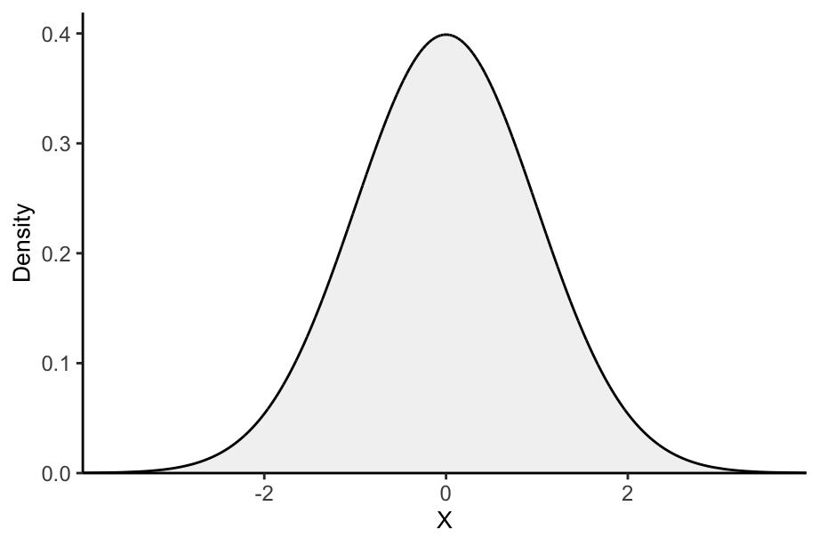
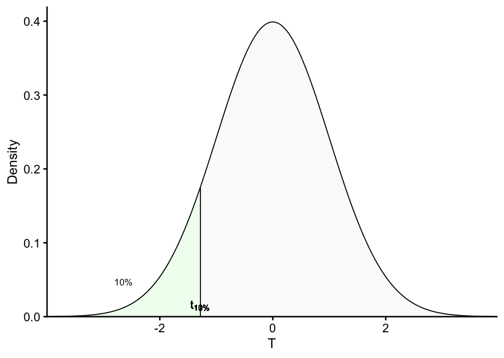
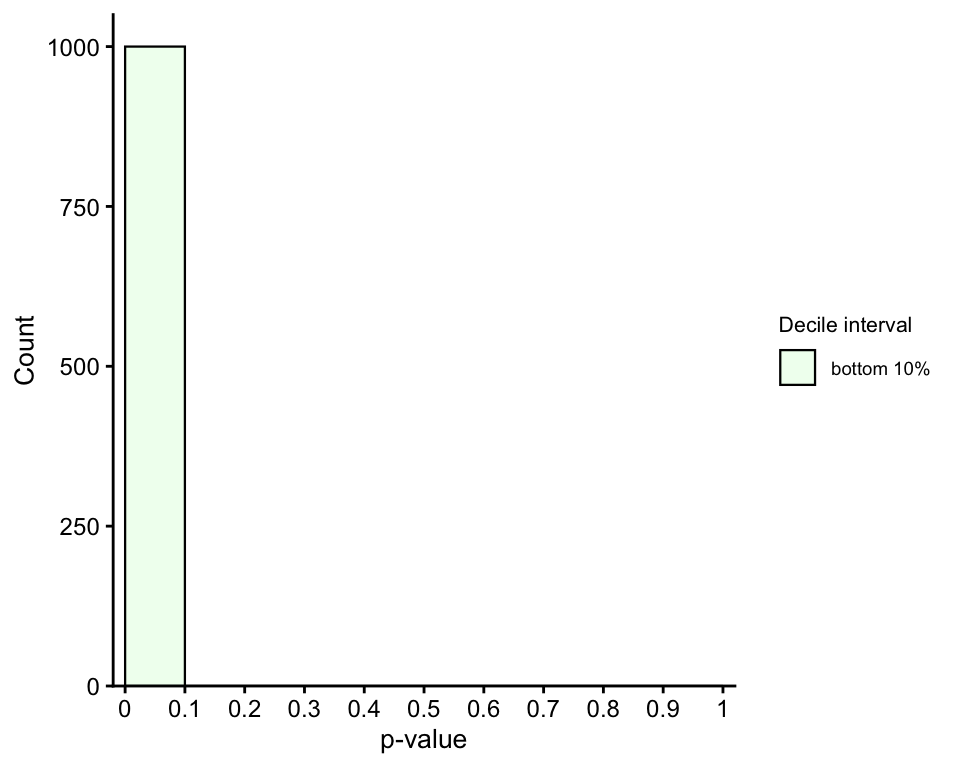

Graphical and mathematical demonstration of why p-values follow an uniform distribution.
Author
Daianna Gonzalez-Padilla
Published
July 16, 2024
Introduction
If you’ve ever tested a null hypothesis across multiple tests and computed a p-value for each, you’ve almost certainly heard:
“Under the null hypothesis, p-values are uniformly distributed.”
In the practice, this statement is not only accepted without dispute but is also very easy to graphically verify— simply plot the histogram of the p-values and assess the flatness of the distribution. Any deviation toward the left (p-values closer to 0) suggests some tests don’t follow the null hypothesis. However, the reason why p-values are expected to be uniform is often a source of confusion as it isn’t immediately apparent.
The uniformity of p-values is a direct consequence of how they’re defined and of a theorem from probability theory called the probability integral transform. In this post, we’ll unpack exactly, both graphically and mathematically, how p-values spread evenly between 0 and 1.
What you’ll learn here
Understand how p-values are derived and how they relate to quantiles of a distribution.
Graphically demonstrate how p-values build an uniform distribution, when taking the lower and upper tails.
Mathematically demonstrate the uniformity of p-values according to xx theorem.
Defining the p-value
A p-value is the probability of a continuous (or discrete) random variable \(X\) acquiring a value “as or less (or more) extreme” as your observed value \(x_{ob}\) according to the null’s reference distribution. Let’s consider the random variable \(X \sim N(0,1)\) and simulate the reference distribution by sampling 10,000 values from this normal distribution.
library(ggplot2)library(latex2exp)## Generate sample from N(0,1) set.seed(08112025)sample <-rnorm(10000, mean =0, sd =1)## Density plot for sampledensity <-dnorm(sample, mean =0, sd =1) df <-data.frame(x = sample, y = density)ggplot(data = df, aes(x = x, ymin =0, ymax = y)) +geom_ribbon(fill ="gray95", linewidth =0.4) +theme_classic() +labs(x = latex2exp::TeX("$X$"), y ="Density") +geom_line(aes(y = y)) +coord_cartesian(ylim =c(0, max(df$y)+0.02), expand = F) +theme(plot.subtitle =element_text(size =9, color ="gray30"), axis.text =element_text(size =9),axis.title.x =element_text(size =10),axis.title.y =element_text(size =10))

For a left-tailed test the p-value for \(x_{ob}\) is given by \(F_X(x_{ob}) = P(X \leq x_{ob})\), i.e., the cumulative distribution function (CDF) of \(X\).
For a two-tailed test the p-value for \(x_{ob}\) is the double of the smaller tail probability, i.e., \(F_X(x_{ob}) = 2 \times P(X \leq x_{ob})\), or alternatively, \(2 \times P(X >x_{ob})\).
To understand why p-values are uniformly distributed, let’s start by taking all observations of \(X\) that are below the 1st decile, i.e., the bottom 10% of the data. While deciles are used here for ease of illustration, the concepts extend naturally to any chosen percentage of the data.
For this purpose, below we build a function to annotate each observed value of \(X\) with the decile interval it falls into, a second function to plot the density of \(X\) highlighting consecutive intervals each containing 10% of the data, and a third function we’ll use later to plot the histogram of p-values for data points in selected decile intervals.
Show functions
library(dplyr)## Function to annotate decile range of each data pointannotate_decile_range <-function(decile){ q = decile decile_range <-if_else(df$x <=quantile(df$x, q), paste("leq", q), paste("g", q))while(q >0.1){## If each observation is between decile q-1 and q decile_range[which(df$x >quantile(df$x, q-0.1) & df$x <=quantile(df$x, q))] <-paste("g", q-0.1, ", leq", q) q = q -0.1 } decile_range[which(df$x <=quantile(df$x, 0.1))] <-"leq 0.1" df$decile_range <- decile_rangereturn(df)}## Function to plot decile intervals in X density up to q decileplot_density_decile <-function(decile){ df <-annotate_decile_range(decile)## Colors and alphas for decile ranges range_colors =c(colorRampPalette(c("honeydew1", "azure2", "thistle2","plum","sienna2"))(10), "gray90") range_alphas =c(rep(1, 10), 0.2)names(range_colors) <-names(range_alphas) <-c("leq 0.1", paste("g", seq(from =0.1, to =0.9, by =0.1), ",", "leq", seq(from =0.1, to =0.9, by =0.1) +0.1), paste("g", decile)) vlines <-vector()for(q inseq(from =0.1, to = decile, by =0.1)){## For vertical lines in each decile x =quantile(df$x, q) xend =quantile(df$x, q) y =0 yend = df[which.min(abs(df$x - x)), "y"]## For annotating "10%" above each decile range prior_x =quantile(df$x, q-0.1) prior_yend = df[which.min(abs(df$x - prior_x)), "y"] middle_x = prior_x + (x - prior_x)/2 middle_y = prior_yend + (yend - prior_yend)/2if(q ==0.1){ lab_x_pos = middle_x lab_y_pos = middle_y -0.04 }elseif(q ==1){ lab_x_pos = middle_x lab_y_pos = middle_y -0.03 }elseif(q ==0.5){ lab_x_pos = middle_x -0.05 lab_y_pos = middle_y +0.014 }elseif(q ==0.6){ lab_x_pos = middle_x +0.12 lab_y_pos = middle_y +0.014 }else{ lab_x_pos = middle_x + (sign(x)*0.17) diff_y =abs((yend - prior_yend)/2) lab_y_pos = middle_y + (diff_y*0.33) } vlines <-rbind(vlines, c(q, x, xend, y, yend, lab_x_pos, lab_y_pos)) } vlines <-as.data.frame(vlines)colnames(vlines) <-c("decile", "x", "xend", "y", "yend", "lab_x_pos", "lab_y_pos")ggplot(data = df, aes(x = x, ymin =0, ymax = y, fill = decile_range,alpha = decile_range)) +geom_ribbon(color ="black", linewidth =0.35) +theme_classic() +scale_fill_manual(values = range_colors) +scale_alpha_manual(values = range_alphas) +labs(x = latex2exp::TeX("$X$"), y ="Density") +geom_segment(data = vlines, inherit.aes = F,aes(x = x +0.005, xend = xend +0.005,y = y, yend = yend), linewidth =0.35, show.legend = F) +geom_text(data = vlines, inherit.aes = F,aes(x = lab_x_pos, y = lab_y_pos), label ="10%", size =2.4, show.legend = F) +guides(fill ="none", alpha ="none") +coord_cartesian(ylim =c(0, max(df$y)+0.02), expand = F) +theme(axis.text =element_text(size =9),legend.text =element_text(size =7),legend.title =element_text(size =8),legend.key.height =unit(0.5, "cm"), legend.key.width =unit(0.5, "cm"),axis.title.x =element_text(size =10),axis.title.y =element_text(size =10))}## Function to plot pval histogram up to decile qplot_pval_hist <-function(decile, tail){if(tail =="left"){ tail_pvals <-"left_tailed_pval" } elseif(tail =="right"){ tail_pvals <-"right_tailed_pval" } else{ tail_pvals <-"two_tailed_pval" }## Colors and alphas for decile ranges range_colors =colorRampPalette(c("honeydew1", "azure2","thistle2","plum","sienna2"))(10)names(range_colors) <-c("leq 0.1", paste("g", seq(from =0.1, to =0.9, by =0.1), ",", "leq", seq(from =0.1, to =0.9, by =0.1) +0.1)) decile_ranges_labs <-c("bottom 10%", "between 10-20%", "between 20-30%", "between 30-40%","between 40-50%", "between 50-60%", "between 60-70%","between 70-80%","between 80-90%", "top 10%")names(decile_ranges_labs) <-names(range_colors) df <-annotate_decile_range(decile) decile_ranges <-setdiff(unique(df$decile_range), paste("g", decile)) data =subset(df, decile_range %in% decile_ranges) data$decile_range <-factor(data$decile_range, levels =names(decile_ranges_labs))if(tail =="both"){ data$decile_range <-factor(data$decile_range, levels =rev(names(decile_ranges_labs))) }ggplot(data, aes(x =get(tail_pvals), fill = decile_range)) +geom_histogram(color="black", bins =10, binwidth =0.3, linewidth =0.4,breaks =seq(from =0, to =1, by =0.1)) +theme_classic() +scale_fill_manual(values = range_colors, labels = decile_ranges_labs[decile_ranges]) +coord_cartesian(xlim =c(-0.02, 1.02), ylim =c(0, 1050), expand = F) +scale_x_continuous(breaks =seq(from =0, to =1, by =0.1),labels =seq(from =0, to =1, by =0.1)) +labs(x ="p-value", y ="Count", fill ="Decile range") +theme(axis.text =element_text(size =9),legend.text =element_text(size =7),legend.title =element_text(size =8),legend.key.height =unit(0.5, "cm"),legend.key.width =unit(0.5, "cm"),axis.title.x =element_text(size =10),axis.title.y =element_text(size =10))}
plot_density_decile(0.1)

We note the probability of \(X\) being smaller or equal to each of the data points within this bottom 10% does not exceed 10%. Revisiting the definition of the left-tailed p-value for any observed \(x\), \(p(x) = F_X(x) = P(X \leq x)\), this means p-values for this lowest decile interval are ≤ 0.1. Let’s examine this by computing the left-tailed p-value for all observations and displaying the histogram for those below the 1st decile.
## Left-tailed p-valsdf$left_tailed_pval <-sapply(df$x, function(x){table(df$x <= x)["TRUE"]/10000})## Hist of pvals for bottom 10% data pointsplot_pval_hist(0.1, "left")

Next, let us consider the subsequent 10% of the data—namely, the observations between the first and second deciles—and examine their associated p-values.
Because every time we take the same percentage of the data lying between the \(q ∈ \{1,2,3, ..., 10\}\)th and \(q-1\)th deciles with p-values contained between \(\frac{q-1}{10}\) and \(\frac{q}{10}\), bars have equal height in the histogram.
See it now, isn’t? If not, let’s try adding more data— 30%, 40%, 50% … up to the full dataset.
These graphical observations can be formally demonstrated. The probability integral transform theorem states that for \(X\), a continuous random variable, the random variable for its cumulative distribution function \(Y = F_X(x) = P(X \leq x)\), which returns its p-values, has a uniform distribution on the interval \([0,1]\).
Proof: consider the cumulative distribution function of \(Y\), \(F_Y(y) = P(Y \leq y)\). The key here is to note that the probability of getting p-values below or equal to \(y\) is equivalent to the probability of getting \(X\) values below or equal to corresponding quantile for \(y\) (see example below).
Therefore, \(P(Y \leq y) = P(X \leq F^{-1}_X(y))\), which, by definition, is exactly \(y\). Thus, \(F_Y(y)=P(Y \leq y) = y\) and \(Y\) is uniformly distributed.
Right-tailed p-values
For right-tailed p-values the pattern is mirrored: the bottom 10% of the data points have p-values between 0.9 to 1, the second top 10% between 0.8 and 0.9, and so on …
Proof: we define \(Y_c = P(X > x) = 1 - Y\), with \(Y = P(X \leq x)\). Its CDF is given by \(P(Y_c\leq y) = 1 - P(Y_c > y)\). The key here is to note that the those right-handed p-values greater than \(y\) correspond to the bottom \(1-y\) proportion of the data so that \(P(Y_c > y) = P(X \leq F^{-1}_X(1-y))\), which by definition, equals \(1-y\) (see example below). Therefore \(P(Y_c >y) = 1-y\) and \(P(Y_c\leq y) = 1 - (1 - y) = y\), and both, \(Y\) and its complement \(Y_c\), follow an uniform distribution.
For data points within intervals of deciles \(q ∈ \{1,2,3,4,5\}\), their two-tailed p-values lie between \(\frac{q-1}{10}\times 2\) and \(\frac{q}{10}\times 2\), whereas for those above the 5th decile, p-values lie between \((1-\frac{q-1}{10})\times 2\) and \((1-\frac{q}{10})\times 2\).
Proof: let \(Y_l\) and \(Y_r\) be the random variables for two-tailed p-values for observations of \(X\) below and above the 5th decile, respectively (bottom and top half of previous histogram, respectively). Let \(Y_t\) be the random variable for two-tailed p-values across all observations (the complete histogram). The CDF of \(Y_t\) is \(P(Y_t \leq y) = \frac{P(Y_l \leq y)}{2} + \frac{P(Y_r \leq y)}{2} = P(Y \leq \frac{y}{2}) + P(Y_c \leq \frac{y}{2})\). Because \(Y\) and \(Y_c\) are uniformly distributed, the latter equals to \(\frac{y}{2} + \frac{y}{2}\) so \(P(Y_t \leq y) = y\) and is thus also uniformly distributed.
The test statistic’s reference distribution is correct (e.g., you’re actually using the right t-distribution, χ² distribution, etc.)
No p-hacking or data snooping has been done
Continuous test statistic (ties complicate things)
In that ideal case,
P(p≤α)=α
for all α∈[0,1]α∈[0,1],
meaning the p-value follows a Uniform(0,1) distribution.
When they are not uniformly distributed
Null hypothesis is false → p-values are stochastically smaller (skewed toward 0)
Model assumptions are violated (wrong reference distribution, heteroscedasticity, etc.) → distribution can be distorted in unpredictable ways
Discrete test statistics (e.g., Fisher’s exact test) → distribution is “stepped” and not perfectly uniform
Multiple testing without correction → aggregated p-values no longer follow a simple uniform distribution
Selection bias / p-hacking → distribution can become heavily biased toward small values
✅ Bottom line:
P-values are theoretically Uniform(0,1) only under the null and correct modeling assumptions.
The reference distribution does matter — if it’s wrong, the uniformity breaks.
Conclusion
The cases where the p-values ar enot uniformly distributed have been discussed in. This is the formal basis of p-values being uniform: by definition they are CDF evaluations of observed statistics.